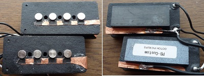
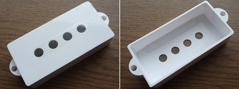

ポールピースのアース落とし
2013年08月06日 カテゴリー：ベース関係
ピックアップのポールピースに触るとジーというノイズが入るというのは多くの人が経験されたことがあると思います。まぁそこまで大きな音ではないので特に気にしなくてよいかもしれません。
私の場合、ベースの弦をエリクサーに変えたとき弦アースがとれなくなったらしく、指をポールピースに近づけるだけで結構大きなノイズが出てしまいました。それでポールピースをアースに落とすことにしました。
GOTOH PICKUPSのプレシジョンベース用モデルPB-Customです。裏側に磁石がついているため表側まで銅箔テープを貼りました。導電塗料で銅箔とポールピースをつなぎ、テスターで導通を確認します。また、コイルに巻いてある線とアースがショートしてしまうと音が出なくなるので必ず確認します。テープがすぐはがれそうなので瞬間接着剤で補強もしています。

このままではピックアップカバーと導電塗料が接触してはがれてしまいそうなので、カバーを少しだけ浮かせることにしました。わかりにくいですがカバーの内側にプラスチック片を取り付けています。さらに念のためカバーの上面に透明なシールを貼って指とポールピースが接触しないようにしました。

この改造をしたベースはキャビティ内部に導電塗料を塗っているため、全くノイズがなくなりました。細かい部分ですがストレスなく弾けるというのは重要だと思います。
---2013年9月7日追記---
ベース単体だと問題なかったのですが、エフェクターを繋いだ状態だとノイズが乗るようです（アースに手を触れると止まります）。なかなかノイズというのは難しいものですね。